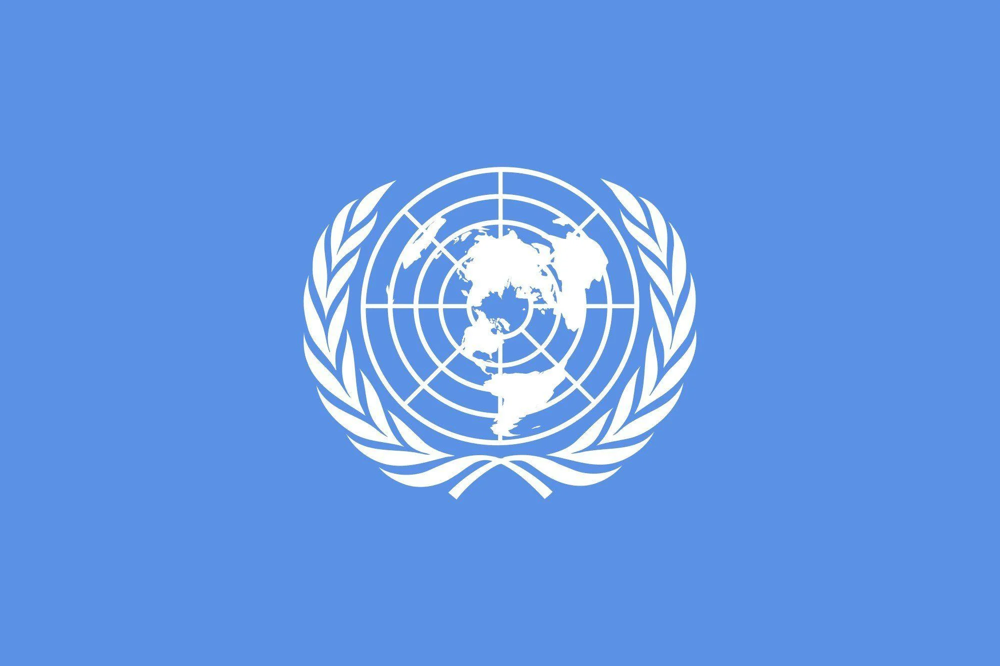
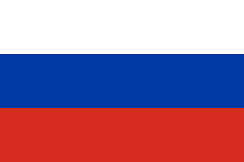

War in Ukraine
Introduction
The War in Ukraine was started on February 24th 2022, when Russian ground forces were ordered to invade the country. These forces were gradually built up since late 2021, and were estimated to be 120,000 strong (not including soldiers from Belarus, hired mercenaries, and volunteers from Russian allies). This act of aggression was condemned internationally due to breaches in international law and previous agreements on Ukrainian national security.
Belligerents
Pro-Ukrainian Forces:
-
Ukranian Army

-
Foreign Volunteer Fighters
 -
NATO (Supply and Training)
Pro-Russian Forces:
-
Russian Army
 -
Pro-Russian Seperatists (Donetsk and Luhansk People's Republics)
-
Belorussian Volunteer Fighters
History
The modern country of Ukraine declared its independence from the Soviet Union in 1991, after hundreds of years under Russian control. This new repubic, and many post-Soviet countries for that matter had to make an important decision: Pursue closer relations with the West or stick with Russia? Ukraine tried its hand with both, improving relations with the European Union while also being part of the Russian-led CSTO military alliance. In 1996, Ukraine gave back its nuclear weapons to Russia, which had been quietly stockpiled after the collapse of the Soviet Union, with Russia, USA, and NATO guaranteeing "Ukraine's territorial integrity" at the Bucharest Agreement. However, disaster struck the country in 2014. Pro-Russian president Viktor Yanukovych rejected a trade agreement with the European Union, greatly angering the Ukrainian people. He was eventually ousted from power and exiled to Russia after several protests collectively known as the "Revolution of Dignity". Russia proceeded to take advantage of Ukraine's instability and took over the Crimean Peninsula which hosted the major port of Sevastopol, while also supporting pro-Russian seperatists in the Donbas region of Ukraine.
Effects
The War in Ukraine has killed several thousand soldiers and civilians, destroying many homes and critical infrastructure such as roads, bridges, etc. Millions more were forced to flee to neighboring countries and beyond, such as Poland, Romania, Moldova, and Slovakia, creating somewhat of a refugee crisis. The war has also caused great suffering in occupied areas, as many Ukrainian civilians are starved, beaten, sometimes killed by their occupiers.
Documentation & Further Reading
(2022)
CNBC's ArticleCNN's Article
The New York Times' Article
(2014 - 2021)
Human Rights Watch's ArticleThe BBC's Article
Recent History of Ukraine
PBS' ArticleThe BBC's Video
Images and Videos
Ukrainian President Volodomyr Zelensky on a visit to the front lines.
Ukrainian soldiers firing artillery on Russian positions.
A destroyed Russian tank near Kyiv
Sky News' report as Ukrainian Army attempts to liberate Kherson in southern Ukraine